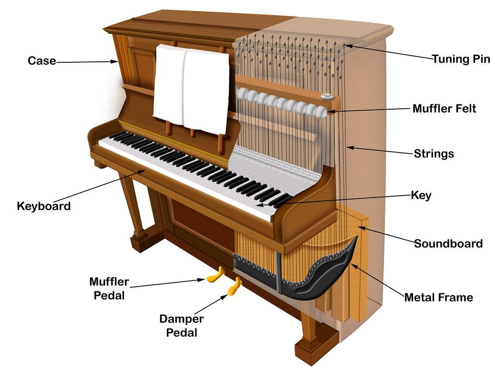

88 Keys

Body Mechanisms
The piano body houses the core structural and acoustic components, from the frame to the pedals. These parts provide the necessary stability, tension, and sound amplification. Below is a detailed breakdown of these components.
Case Body
Provides structural support, protection of internal components, and contributes to the instrument's acoustics.
Pin Block
Resists the outward pull of the strings, ensuring tuning stability and proper pitch.
Tuning Pin
Anchors and controls the tension of each piano string.
Pressure Bar
Holds the strings firmly in place to ensure correct alignment and proper termination.
Metal Frame (Plate)
Provides structural integrity to withstand immense string tension and influences the piano's sound quality.
Bass Bridge
Transmits the vibrations of the bass strings to the soundboard, amplifying the deep, resonant tones.
Hitch Pin
Securely anchors one end of the piano string to the cast-iron frame.
Soft Pedal (Una Corda)
Softens the sound by altering the hammer's strike, creating a muted, ethereal tone.
Sostenuto Pedal
Selectively sustains only the notes held down at the moment the pedal is pressed.
Hammer Rail
Holds and cushions the hammer shanks when they return, allowing for rapid repetition.
Keyboard
Functions as the player's interface, translating key presses into musical notes.
Muffler Felt (Mute)
Dampens the sound significantly for quiet practice (often controlled by the middle pedal on uprights).
Hammers
Strikes the strings when a key is pressed, causing them to vibrate and produce sound.
Soundboard
Magnifies faint vibrations from the strings into the audible sound we hear.
Treble Strings
Produces the high-pitched notes of the instrument.
Pedal Rod
The metal linkage connecting a foot pedal to the internal sound modification mechanism.
Damper Pedal (Sustain)
Lifts all dampers off the piano strings, allowing notes to ring out and blend for a sustained, richer sound.

Internal Mechanisms of an Upright Piano

External Components of the Piano Body
Action Mechanisms
The piano's action is the mechanical system connecting the key to the hammer and damper. This intricate assembly determines the piano's responsiveness and dynamic control, ensuring a precise strike and instant cessation of sound when the key is released.
String
Produces sound through vibration when struck.
Damper
Stops strings from vibrating, creating clear, distinct notes when the key is released.
Damper Rail
Supports and regulates the felt-covered dampers.
Hammer Butt
Translates the key's motion into the hammer's strike and then control its quick rebound.
Damper Lever
Lifts the damper off the string when the key is pressed.
Jack
Transfers the energy of the key to the hammer, propelling it toward the string.
Jack Spring
Holds the jack in position under the hammer butt, allowing it to reset quickly.
Capstan Button
Acts as a precision contact point between the key and the action, used for regulating key height.
Action Lever
The assembly that translates finger pressure on a key into a rapid hammer strike against the strings.
Balance Rail
Provides a stable pivot point (fulcrum) for the keys, allowing them to rock up and down smoothly when played.
Hammer Felt
The impact surface that strikes the strings; its density determines the tone's volume and character.
Hammer
Strikes the strings to produce sound.
Hammer Rail
Provides a stable, cushioned base for the hammers to rest on when keys aren't pressed.
Hammer Shank
The connection between the hammer head and the rest of the action.
Catcher
Catches the rebounding hammer, preventing it from striking the string again or dropping too far.
Back Check
Works with the catcher to stop the hammer's rebound, crucial for fast note repetition.
Bridle Tape
Helps reset the hammer quickly and holds the wippen assembly in place during servicing.
Regulating Button
Controls the moment the hammer mechanism disengages, or "lets off," from the string.
Key
The interface element that triggers the entire action sequence, producing the musical note.

The Wippen and Hammer Assembly

Detailed View of the Upright Piano Action